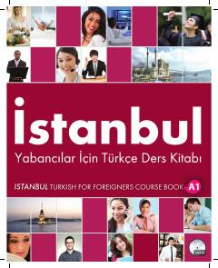

İYChet elliklar uchun boshlang'ich A1 darajasidagi turk tili darsligi.
Ushbu darslik chet elliklar uchun turk tilini boshlang'ich A1 darajasida o'rgatish maqsadida İstanbul Üniversitesi Dil Merkezi mutaxassislari tomonidan tuzilgan. Kitobda kundalik muloqot, grammatika qoidalari, tinglab tushunish va so'zlashuv ko'nikmalarini rivojlantiruvchi mavzular o'rin olgan.